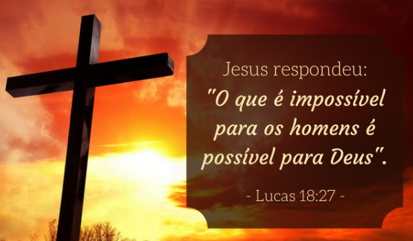

Bispa Neusa, Obrera Patricia e Presbitera Patricya
“Onde há fé, há amor; onde há amor, há paz; onde há paz, há Deus, e onde há Deus, nada falta.”
João 14:
Respondeu Jesus: "Eu sou o caminho, a verdade e a vida. Ninguém vem ao Pai, a não ser por mim". (João 14:6)
Os discípulos ficaram desnorteados depois de ouvirem Jesus dizer o que aconteceria com ele. Dado momento, Tomé faz uma pergunta ao mestre: "Senhor, não sabemos para onde vais; como então podemos saber o caminho?" A resposta de Jesus foi poderosa: Ele era o caminho! O sacrifício necessário que daria acesso direto ao Pai. A Verdade, imutável e absoluta. O único caminho que leva à vida eterna. Que possamos caminhar sobre estas palavras!
2 Crônicas 7:14
Como povo escolhido e separado por Deus, devemos incentivar uns aos outros para permanecerem no caminho da salvação. Devemos exortar uns aos outros em amor para que todos cresçam espiritualmente e nos mobilizarmos em oração buscando à face de Deus.
Deus já derramou a sua promessa e depende de nós permanecermos firmes e buscarmos a sua face. Ele curará o nosso povo, derramará o seu perdão e sarará a nossa terra!
Lucas 18:27
Jesus respondeu: " O que é impossível para os homens é possível para Deus" (Lucas 18:27).
Para Deus não há impossível! Não há nada que possa impedir o seu agir. Temos limitações como homens, mas aquele que está em Cristo é capaz de alcançar grandes coisas através do Filho de Deus! Recebemos o que seria impossível para nós: pagamento pelos nossos pecados. Ele se entregou por nós! Recebemos de graça a Salvação e somos prova de que o que era impossível para nós foi possível para Deus!
